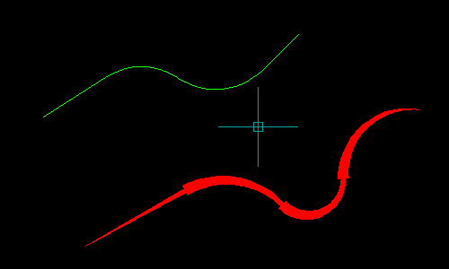

Offset Polyline Section
This page is delivered for consistency purposes only, as part of the LeeMac sample module of DynALisp, which shows how DynALisp turns existing AutoLISP programs into a module. The program and its description are the work of Lee Mac, who keeps all the credit for them. The original page, with the latest version, is on Lee Mac's website: https://lee-mac.com/offsetpolysection.html
| Function Syntax | LM-OffsetPolylineSection – original syntax: offsec (see aliases) |
| Current Version | 1.1 |
| Compatible with AutoCAD for Mac? | No |
| Compatible with AutoCAD LT? | Yes |
| Original Page | lee-mac.com/offsetpolysection.html |
Program Description
This program enables the user to offset a section of a polyline enclosed by two selected points on the polyline.
Upon issuing the command syntax offsec at the AutoCAD command-line, the user is first prompted to specify an offset distance by which the polyline section will be offset to both sides. At this prompt, the last entered offset distance is available as a default option, with an initial default of 1 unit.
The user is then prompted to select a polyline to offset; the program is compatible with lightweight polylines (LWPolylines) of constant or varying width, with straight and/or arc segments, and defined in any UCS construction plane.
Following a valid selection, the user is then prompted to specify two points along the length of the selected polyline enclosing the polyline section to be offset by the program. If either of the selected points does not lie directly on the selected polyline, the program will automatically use a point on the polyline situated closest to the point selected by the user.
If two valid distinct points are specified, the program will proceed to offset all complete & partial polyline segments enclosed between the two points (in the direction of the polyline) to both sides by the offset distance specified.
As noted above and also demonstrated in the animation below, the program will perform successfully with all forms of LWPolyline with constant or varying width segments, straight or arc segments, and defined in any UCS construction plane.
Program Demonstration

Bundled program notes
;;------------------=={ Offset LWPolyline Section }==-------------------;;
;; ;;
;; This program prompts the user to specify an offset distance and to ;;
;; select an LWPolyline. The user is then prompted to specify two ;;
;; points on the LWPolyline enclosing the section to be offset. The ;;
;; progam will proceed to offset all segments between the two given ;;
;; points to both sides by the specified distance. ;;
;; ;;
;; The program is compatible with LWPolylines of constant or varying ;;
;; width, with straight and/or arc segments, and defined in any UCS ;;
;; construction plane. ;;
;;----------------------------------------------------------------------;;
;; Author: Lee Mac, Copyright © 2013 - www.lee-mac.com ;;
;;----------------------------------------------------------------------;;
;; Version 1.0 - 27-12-2012 ;;
;; ;;
;; First release. ;;
;;----------------------------------------------------------------------;;
;; Version 1.1 - 05-04-2013 ;;
;; ;;
;; Fixed bug when offsetting polyline arc segments. ;;
;;----------------------------------------------------------------------;;
Command Names And Aliases
As in every DynALisp module, each program of this sample module has one main command, named LM-*, and the original command names of Lee Mac's page are kept as its aliases: they run the same command, and can be added, renamed or removed in Dyl-Suite (saved in Resources\Aliases.csv).
| Command | Aliases | Name |
|---|---|---|
| LM-OffsetPolylineSection | OFFSEC | Offset Polyline Section |